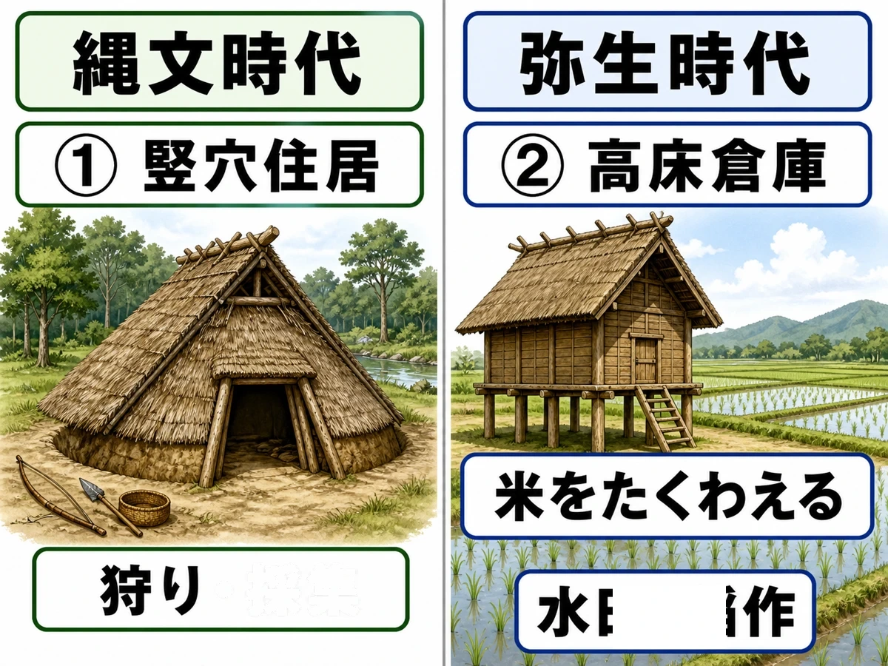

‹ 単元一覧にもどる
歴史 ③問題集
日本の始まり
旧石器時代 〜 古墳時代
 いっしょに
いっしょにがんばろう！
年
年表でチェック
（ ）をタップすると答えが出るよ。まずは自分で言ってから確かめよう！
| 年代 | できごと |
|---|---|
| 氷期(氷河時代) | 大陸と陸続きになった日本列島に、大型動物のなどが渡ってきた |
| 旧石器時代 | 群馬県ので打製石器が発見され、日本にも旧石器時代があったことが証明された |
| 約1万年前 | 気候が温暖になり海面が上昇して日本列島が大陸から切り離され、が始まった |
| 縄文時代 | 人々は地面を掘り下げたに住み、祈りのためにを作った |
| 紀元前4世紀ごろ | 大陸から九州北部にが伝わり、弥生時代が始まった |
| 弥生時代 | 収穫した稲を湿気やねずみから守るためにが造られた |
| 1世紀 | の王が後漢の皇帝からを授かった |
| 3世紀ごろ | 邪馬台国の女王が魏に使いを送り、の称号を得た |
| 3世紀後半 | 近畿地方を中心にが成立した |
| 古墳時代 | 大王や豪族の力を示すが各地に造られた |
| 5世紀 | 中国の南朝に使いを送った倭の五王の記録が中国の歴史書『』に残された |
| 5世紀後半 | の名が刻まれた鉄剣・鉄刀が稲荷山古墳と江田船山古墳から出土した |
| 古墳時代 | 大陸から移り住んだが須恵器や漢字などの技術・文化を伝えた |
| 6世紀半ば | 渡来人によって百済から日本へが伝えられた |
1
旧石器時代と縄文時代
▶やり方をえらぼう目次にもどれば何度でも変えられるよ
解答
採点
順番
順番
A要点まとめ（ ）をタップして確かめよう
📖 先に参考書で理解する
今から数万年前、日本列島がまだ大陸と陸続きだった（氷河時代）には、大陸から渡ってきたやオオツノジカが人々の狩りの対象となった。石を打ち欠いて作ったを使うこの時代を旧石器時代といい、群馬県ので相沢忠洋が打製石器を発見したことで、日本にも旧石器時代があったことが証明された。約1万年前に気候が温暖になり海面が上昇して大陸から切り離されるとが始まり、人々は表面に縄目の文様があるを使い、地面を掘り下げて柱を立てたに定住しての生活を送った。食べ終えた貝殻や骨を捨てたや、祈りのために作られたから、当時の暮らしの様子がわかる。
▶ここからは一問一答答え合わせのやり方をえらぼう
B一問一答1 / 14
打製石器を使い移動しながら生活した最も古い時代は？
📖 解説を読む（ヒント）
旧石器時代
日本列島がまだ大陸とつながっていたころ、打製石器を使って狩りや採集をしていた時代。縄文時代より前で、土器はまだ本格的に使われない。
B一問一答2 / 14
日本が大陸と陸続きだった寒い時期を何という？
📖 解説を読む（ヒント）
氷期（氷河時代）
海面が低く、日本列島が大陸とつながっていた時期。ナウマンゾウなど大型動物が渡ってきた。
B一問一答3 / 14
氷河時代に大陸から渡ってきた大型のゾウは？
📖 解説を読む（ヒント）
ナウマンゾウ
氷河時代に大陸から渡ってきた大型のゾウ。長野県の野尻湖で化石が発見され、旧石器時代の狩猟対象だった。
B一問一答4 / 14
氷河時代に大陸から渡ってきた大きな角を持つシカは？
📖 解説を読む（ヒント）
オオツノジカ
氷河時代に大陸から渡ってきた、大きな角を持つシカ。ナウマンゾウと並ぶ旧石器時代の代表的な狩りの対象。
B一問一答6 / 14
群馬県で打製石器が発見され、日本の旧石器時代を証明した遺跡は？
📖 解説を読む（ヒント）
岩宿遺跡
相沢忠洋が打製石器を発見し、日本にも旧石器時代があったことを証明した重要な遺跡。
B一問一答7 / 14
岩宿遺跡で打製石器を発見した人物は？
📖 解説を読む（ヒント）
相沢忠洋
行商をしながら独学で考古学を学び、群馬県の岩宿遺跡で打製石器を発見し、日本の旧石器時代を証明した人物。
B一問一答8 / 14
石器の材料として重宝された黒いガラス質の石は？
📖 解説を読む（ヒント）
黒曜石
黒いガラス質の石で鋭い刃を作れた。長野県の和田峠などが産地で、遠方からも出土し広域交易の証拠となる。
B一問一答9 / 14
旧石器時代の石器の材料となった香川県の石は？
📖 解説を読む（ヒント）
サヌカイト
香川県で産出される黒っぽい安山岩で、石器の材料となった。旧石器時代から縄文時代まで広く道具作りに使われた。
B一問一答12 / 14
縄文人が地面を掘り柱を立てて造った家は？
📖 解説を読む（ヒント）
竪穴住居（たて穴住居）
地面を50cmほど掘り下げ、柱を立てて屋根をかけた住居。縄文時代から弥生時代まで広く使われた。
B一問一答14 / 14
祈りや魔よけのために作られた土の人形は？
📖 解説を読む（ヒント）
土偶
縄文時代に作られた人形のような土製品。女性をかたどったものが多く、安産や豊作の祈り・まじないに使われたとされる。
B一問一答全14問・まとめて採点
まず全部の問題にこたえてから、下のボタンでまとめて答え合わせしよう！
(1)打製石器を使い移動しながら生活した最も古い時代は？
旧石器時代
日本列島がまだ大陸とつながっていたころ、打製石器を使って狩りや採集をしていた時代。縄文時代より前で、土器はまだ本格的に使われない。
(2)日本が大陸と陸続きだった寒い時期を何という？
氷期（氷河時代）
海面が低く、日本列島が大陸とつながっていた時期。ナウマンゾウなど大型動物が渡ってきた。
(3)氷河時代に大陸から渡ってきた大型のゾウは？
ナウマンゾウ
氷河時代に大陸から渡ってきた大型のゾウ。長野県の野尻湖で化石が発見され、旧石器時代の狩猟対象だった。
(4)氷河時代に大陸から渡ってきた大きな角を持つシカは？
オオツノジカ
氷河時代に大陸から渡ってきた、大きな角を持つシカ。ナウマンゾウと並ぶ旧石器時代の代表的な狩りの対象。
(5)石を打ち欠いて作った旧石器時代の石器は？
打製石器
石を打ち欠いて作った最も原始的な石器。旧石器時代の代表的な道具で、狩りや調理に使われた。
(6)群馬県で打製石器が発見され、日本の旧石器時代を証明した遺跡は？
岩宿遺跡
相沢忠洋が打製石器を発見し、日本にも旧石器時代があったことを証明した重要な遺跡。
(7)岩宿遺跡で打製石器を発見した人物は？
相沢忠洋
行商をしながら独学で考古学を学び、群馬県の岩宿遺跡で打製石器を発見し、日本の旧石器時代を証明した人物。
(8)石器の材料として重宝された黒いガラス質の石は？
黒曜石
黒いガラス質の石で鋭い刃を作れた。長野県の和田峠などが産地で、遠方からも出土し広域交易の証拠となる。
(9)旧石器時代の石器の材料となった香川県の石は？
サヌカイト
香川県で産出される黒っぽい安山岩で、石器の材料となった。旧石器時代から縄文時代まで広く道具作りに使われた。
(10)約1万数千年前から日本で土器を使い始めた時代は？
縄文時代
縄文土器を使い、狩り・採集・漁を中心に生活した時代。稲作が広がる弥生時代と区別。
(11)表面に縄目のような文様がある土器は？
縄文土器
縄を転がしてつけた縄目文様が特徴で、厚手で黒っぽいものが多く装飾が豊か。低温で焼かれもろい。
(12)縄文人が地面を掘り柱を立てて造った家は？
竪穴住居（たて穴住居）
地面を50cmほど掘り下げ、柱を立てて屋根をかけた住居。縄文時代から弥生時代まで広く使われた。
(13)食べ終わった貝殻や魚の骨を捨てた場所は？
貝塚
縄文人が食べた貝殻や魚・動物の骨を捨てた場所。当時の食生活や自然環境を知る貴重な手がかりとなる。
(14)祈りや魔よけのために作られた土の人形は？
土偶
縄文時代に作られた人形のような土製品。女性をかたどったものが多く、安産や豊作の祈り・まじないに使われたとされる。
D記述問題1 / 2 文章で説明しよう
岩宿遺跡が発見されたことで、日本の歴史について何が明らかになったか説明しなさい。
指定語句 打製石器
📖 解説を読む（ヒント）
群馬県の岩宿遺跡で相沢忠洋が打製石器を発見したことで、日本にも旧石器時代があったことが明らかになった。
D記述問題2 / 2 文章で説明しよう
縄文時代の人々が土偶を作った目的を簡単に書きなさい。
指定語句 土偶
📖 解説を読む（ヒント）
女性をかたどったものが多く、安産や豊作を願うための祈りやまじないの道具として土偶が作られた。

2
弥生時代
▶やり方をえらぼう目次にもどれば何度でも変えられるよ
解答
採点
順番
順番
A要点まとめ（ ）をタップして確かめよう
📖 先に参考書で理解する
紀元前4世紀ごろ、大陸から九州北部にが伝わり、東北地方まで広がって弥生時代が始まった。人々は収穫した稲を湿気やねずみから守るためを建て、稲の穂をつみ取るための石包丁を使った。大陸からは実用品として使われた鉄器と、祭りの宝物とされたも伝わり、銅鐸や銅剣・銅鏡が作られた。1世紀にはの王が後漢の皇帝から「漢委奴国王」と刻まれたを授かり、3世紀ごろにはの女王が魏に使いを送っての称号を得た。この頃の様子は中国の歴史書『』に記されている。佐賀県のには堀をめぐらせた環濠集落が見られ、むらどうしの争いがあったことがわかる。
▶ここからは一問一答答え合わせのやり方をえらぼう
B一問一答2 / 14
九州北部に伝わり東北まで広がった農業は？
📖 解説を読む（ヒント）
稲作
紀元前4世紀ごろ大陸から九州北部に伝わり、東北まで広がった。余剰の蓄積と身分差を生み、社会を大きく変えた。
B一問一答3 / 14
収穫した稲を収め、湿気やねずみを防ぐために建てられた倉庫は？
📖 解説を読む（ヒント）
高床倉庫
床を高くして湿気やねずみから稲を守った。弥生時代の代表的な建造物で、稲作と関係が深い。
B一問一答4 / 14
弥生時代に使われた薄手で硬くシンプルな形の土器は？
📖 解説を読む（ヒント）
弥生土器
縄文土器に比べ薄手で硬く、シンプルな形が特徴。赤褐色で、実用的な貯蔵・煮炊き目的に作られた。
B一問一答5 / 14
稲の穂をつみ取るために使われた半月形の石器は？
📖 解説を読む（ヒント）
石包丁
半月形をした石器で、稲穂を一本ずつつみ取るために使われた。弥生時代の稲作を象徴する代表的な農具。
B一問一答6 / 14
武器や工具、農具に用いられた実用的な金属器は？
📖 解説を読む（ヒント）
鉄器
弥生時代に大陸から伝わった硬くて丈夫な金属器。農具や武器などの実用品として使われ、生産力を大きく高めた。
B一問一答8 / 14
祭りの宝物として使われた、つりがね形の青銅器は？
📖 解説を読む（ヒント）
銅鐸
弥生時代に祭りで使われたと考えられる、つりがね形の青銅器。近畿地方を中心に多く出土し、表面に絵が描かれることもある。
B一問一答9 / 14
弥生時代に祭りや儀式に使われた青銅製の鏡は？
📖 解説を読む（ヒント）
銅鏡
弥生時代から古墳時代に作られた青銅製の鏡。祭りや儀式に用いられ、王や有力者の権威の象徴でもあった。
B一問一答10 / 14
弥生時代に祭りや儀式に使われた青銅製の武器は？
📖 解説を読む（ヒント）
銅剣
弥生時代に作られた青銅製の剣。実戦用ではなく、祭りや儀式に用いられ、王や有力者の権威を示した。
B一問一答14 / 14
卑弥呼と邪馬台国のことが記されている中国の歴史書は？
📖 解説を読む（ヒント）
『魏志』倭人伝
中国の歴史書『三国志』の一部で、倭や邪馬台国について記している。卑弥呼・邪馬台国を知る重要資料。
B一問一答全14問・まとめて採点
まず全部の問題にこたえてから、下のボタンでまとめて答え合わせしよう！
(1)稲作が伝わり金属器が普及したのは何時代？
弥生時代
稲作が広まり、金属器が使われ、むらが発達した時代。縄文時代との違いは稲作・金属器・身分差。
(2)九州北部に伝わり東北まで広がった農業は？
稲作
紀元前4世紀ごろ大陸から九州北部に伝わり、東北まで広がった。余剰の蓄積と身分差を生み、社会を大きく変えた。
(3)収穫した稲を収め、湿気やねずみを防ぐために建てられた倉庫は？
高床倉庫
床を高くして湿気やねずみから稲を守った。弥生時代の代表的な建造物で、稲作と関係が深い。
(4)弥生時代に使われた薄手で硬くシンプルな形の土器は？
弥生土器
縄文土器に比べ薄手で硬く、シンプルな形が特徴。赤褐色で、実用的な貯蔵・煮炊き目的に作られた。
(5)稲の穂をつみ取るために使われた半月形の石器は？
石包丁
半月形をした石器で、稲穂を一本ずつつみ取るために使われた。弥生時代の稲作を象徴する代表的な農具。
(6)武器や工具、農具に用いられた実用的な金属器は？
鉄器
弥生時代に大陸から伝わった硬くて丈夫な金属器。農具や武器などの実用品として使われ、生産力を大きく高めた。
(7)銅とすずを混ぜて作った金属器は？
青銅器
銅とすずを混ぜ合わせた合金で作った金属器。銅鐸・銅剣・銅鏡などがあり、主に祭りや儀式に使われた。
(8)祭りの宝物として使われた、つりがね形の青銅器は？
銅鐸
弥生時代に祭りで使われたと考えられる、つりがね形の青銅器。近畿地方を中心に多く出土し、表面に絵が描かれることもある。
(9)弥生時代に祭りや儀式に使われた青銅製の鏡は？
銅鏡
弥生時代から古墳時代に作られた青銅製の鏡。祭りや儀式に用いられ、王や有力者の権威の象徴でもあった。
(10)弥生時代に祭りや儀式に使われた青銅製の武器は？
銅剣
弥生時代に作られた青銅製の剣。実戦用ではなく、祭りや儀式に用いられ、王や有力者の権威を示した。
(11)3世紀ごろ、30あまりの国をまとめた女王は？
卑弥呼
邪馬台国の女王。魏に使いを送り、親魏倭王の称号を得た。まじないの力で人々を治めた。
(12)卑弥呼が都を置いていたとされる国は？
邪馬台国
3世紀ごろ、女王卑弥呼が治めたとされる国。『魏志』倭人伝に記されている。畿内説と九州説が議論。
(13)卑弥呼が魏の皇帝から授かった称号は？
親魏倭王
3世紀に魏の皇帝が卑弥呼に与えた称号。金印などとともに授けられ、邪馬台国と中国との外交関係を示す。
(14)卑弥呼と邪馬台国のことが記されている中国の歴史書は？
『魏志』倭人伝
中国の歴史書『三国志』の一部で、倭や邪馬台国について記している。卑弥呼・邪馬台国を知る重要資料。
D記述問題1 / 3 文章で説明しよう
縄文時代と弥生時代の生活の違いを説明しなさい。
指定語句 稲作
📖 解説を読む（ヒント）
縄文時代は狩猟・採集を中心に生活していたが、弥生時代になると稲作が広まり、金属器も使われるようになった。
D記述問題2 / 3 文章で説明しよう
弥生時代のむらの周りに堀や柵がめぐらされていたことから、当時の様子について何がわかるか説明しなさい。
指定語句 環濠
📖 解説を読む（ヒント）
環濠集落のように堀や柵で集落を囲んでいたことから、むらどうしの争いがあり、防御の必要があったことがわかる。
D記述問題3 / 3 文章で説明しよう
3世紀ごろ、邪馬台国の女王卑弥呼が魏に使いを送った目的を説明しなさい。
指定語句 親魏倭王
📖 解説を読む（ヒント）
魏の皇帝から親魏倭王の称号を授かり、倭の王としての地位を認めてもらおうとしたため。
E資料問題写真を見て答えよう

(1)図中の①の住居が使われた縄文時代に、人々が主な食料を得ていた方法を、「狩り」のほかに一つ答えなさい。
(2)図中の②の高床倉庫がつくられるようになった弥生時代に、大陸から伝わって広まった、米をつくる農業を何というか。
3
古墳時代と大和政権
▶やり方をえらぼう目次にもどれば何度でも変えられるよ
解答
採点
順番
順番
A要点まとめ（ ）をタップして確かめよう
📖 先に参考書で理解する
3世紀後半から7世紀まで続いた古墳時代には、近畿地方を中心にが成立し、その頂点に立つのもとに各地の豪族がまとめられた。大王や豪族の力を示す巨大な墓としてが各地に造られ、大阪府堺市のはその代表である。古墳の上には人や動物をかたどったが並べられた。埼玉県の稲荷山古墳と熊本県の江田船山古墳からはの名が刻まれた鉄剣・鉄刀が出土し、大和政権の支配が広い範囲に及んでいたことがわかる。倭の五王が中国の南朝に使いを送ったことは中国の歴史書『』に記されている。朝鮮半島や中国大陸からはが移り住み、硬い土器である須恵器や、6世紀半ばにはなども伝えた。
▶ここからは一問一答答え合わせのやり方をえらぼう
B一問一答1 / 14
巨大な墓が各地で盛んに造られたのは何時代？
📖 解説を読む（ヒント）
古墳時代
3世紀後半から7世紀まで続いた時代。大きな墓である古墳が各地につくられ、大和政権の広がりと関係する。
B一問一答4 / 14
円形と方形を組み合わせた日本独自の大きな墓は？
📖 解説を読む（ヒント）
前方後円墳
前が四角（方形）、後ろが円形を組み合わせた鍵穴のような形の日本独自の古墳。大王や豪族の権力の大きさを示す。
B一問一答5 / 14
堺市にある日本最大級の前方後円墳は？
📖 解説を読む（ヒント）
大仙古墳
大阪府堺市にある日本最大級の前方後円墳で、全長約486m。仁徳天皇の墓と伝えられ、大王の絶大な権力を示す。
B一問一答6 / 14
古墳の表面に並べられた人や動物の焼き物は？
📖 解説を読む（ヒント）
埴輪
古墳の上や周りに並べられた素焼きの土製品。人物・馬・家・円筒などの形があり、死者の魂を守ったとされる。
B一問一答7 / 14
稲荷山古墳の鉄剣に刻まれた大王の名は？
📖 解説を読む（ヒント）
ワカタケル大王
5世紀後半の大王。埼玉の稲荷山古墳と熊本の江田船山古墳の鉄剣・鉄刀に名が刻まれ、大和政権の広い支配を示す。
B一問一答8 / 14
埼玉県にある、ワカタケル大王の名が刻まれた鉄剣が出土した古墳は？
📖 解説を読む（ヒント）
稲荷山古墳
埼玉県行田市にある古墳。ワカタケル大王の名が刻まれた鉄剣が出土し、大和政権の支配が関東まで及んだことを示す。
B一問一答9 / 14
倭の五王の活動が記録されている中国の歴史書は？
📖 解説を読む（ヒント）
宋書
5世紀の倭の五王が中国の南朝に使いを送った活動が記録されている中国の歴史書。当時の日本と中国の関係がわかる。
B一問一答10 / 14
大陸から移り住み技術や文化を伝えた人々は？
📖 解説を読む（ヒント）
渡来人
朝鮮半島や中国大陸から日本に移り住み、技術や文化を伝えた人々。漢字・仏教・須恵器・機織りなどを伝えた。
B一問一答11 / 14
渡来人が伝えた高温で焼く硬い灰色の土器は？
📖 解説を読む（ヒント）
須恵器
渡来人が朝鮮半島から伝えた技術で作られた灰色の硬い土器。ろくろを使って成形し、高温で焼かれるのが特徴。
B一問一答13 / 14
渡来人が6世紀半ばに日本へ伝えた宗教は？
📖 解説を読む（ヒント）
仏教
6世紀半ばに朝鮮半島の百済から日本に伝えられた宗教。寺院建築や仏像彫刻など、のちの日本文化に大きな影響を与えた。
B一問一答全14問・まとめて採点
まず全部の問題にこたえてから、下のボタンでまとめて答え合わせしよう！
(1)巨大な墓が各地で盛んに造られたのは何時代？
古墳時代
3世紀後半から7世紀まで続いた時代。大きな墓である古墳が各地につくられ、大和政権の広がりと関係する。
(2)奈良盆地を中心に現れた強大な勢力は？
大和政権
3世紀後半ごろから近畿地方を中心に成立した政治勢力。大王を中心に豪族をまとめた。
(3)大和政権の頂点に立つ王を何と呼んだ？
大王
大和政権の中心となった王。各地の豪族をまとめる頂点に立ち、のちの天皇号につながる存在となった。
(4)円形と方形を組み合わせた日本独自の大きな墓は？
前方後円墳
前が四角（方形）、後ろが円形を組み合わせた鍵穴のような形の日本独自の古墳。大王や豪族の権力の大きさを示す。
(5)堺市にある日本最大級の前方後円墳は？
大仙古墳
大阪府堺市にある日本最大級の前方後円墳で、全長約486m。仁徳天皇の墓と伝えられ、大王の絶大な権力を示す。
(6)古墳の表面に並べられた人や動物の焼き物は？
埴輪
古墳の上や周りに並べられた素焼きの土製品。人物・馬・家・円筒などの形があり、死者の魂を守ったとされる。
(7)稲荷山古墳の鉄剣に刻まれた大王の名は？
ワカタケル大王
5世紀後半の大王。埼玉の稲荷山古墳と熊本の江田船山古墳の鉄剣・鉄刀に名が刻まれ、大和政権の広い支配を示す。
(8)埼玉県にある、ワカタケル大王の名が刻まれた鉄剣が出土した古墳は？
稲荷山古墳
埼玉県行田市にある古墳。ワカタケル大王の名が刻まれた鉄剣が出土し、大和政権の支配が関東まで及んだことを示す。
(9)倭の五王の活動が記録されている中国の歴史書は？
宋書
5世紀の倭の五王が中国の南朝に使いを送った活動が記録されている中国の歴史書。当時の日本と中国の関係がわかる。
(10)大陸から移り住み技術や文化を伝えた人々は？
渡来人
朝鮮半島や中国大陸から日本に移り住み、技術や文化を伝えた人々。漢字・仏教・須恵器・機織りなどを伝えた。
(11)渡来人が伝えた高温で焼く硬い灰色の土器は？
須恵器
渡来人が朝鮮半島から伝えた技術で作られた灰色の硬い土器。ろくろを使って成形し、高温で焼かれるのが特徴。
(12)渡来人が書類作成や記録のために伝えた文字は？
漢字
渡来人が中国・朝鮮から伝えた文字。書類作成や記録に使われ、日本の文字文化の基盤となった。
(13)渡来人が6世紀半ばに日本へ伝えた宗教は？
仏教
6世紀半ばに朝鮮半島の百済から日本に伝えられた宗教。寺院建築や仏像彫刻など、のちの日本文化に大きな影響を与えた。
(14)古墳時代に朝鮮半島北部にあった強国は？
高句麗
古墳時代に朝鮮半島の北部から中国東北部にかけてあった強国。南へ勢力を広げ、大和政権と対立した。
D記述問題1 / 3 文章で説明しよう
稲荷山古墳と江田船山古墳から出土した鉄剣・鉄刀からどのようなことがわかるか説明しなさい。
指定語句 ワカタケル大王
📖 解説を読む（ヒント）
どちらの古墳からもワカタケル大王の名が刻まれた鉄剣・鉄刀が出土しており、大和政権の支配が関東から九州まで及んでいたことがわかる。
D記述問題2 / 3 文章で説明しよう
古墳に埴輪が並べられた目的を簡単に書きなさい。
指定語句 埴輪
📖 解説を読む（ヒント）
人や動物などをかたどった埴輪を古墳の上に並べ、古墳を飾るためにつくられた。
D記述問題3 / 3 文章で説明しよう
古墳時代に大陸から日本へ移り住んだ渡来人は、どのようなものを伝えたか説明しなさい。
指定語句 須恵器漢字
📖 解説を読む（ヒント）
渡来人は、須恵器とよばれる硬い土器や漢字、6世紀半ばには仏教などの技術や文化を伝えた。
解答
年表でチェック
ナウマンゾウ 岩宿遺跡 縄文時代 たて穴住居 土偶 稲作 高床倉庫 奴国 金印 卑弥呼 親魏倭王 大和政権 前方後円墳 宋書 ワカタケル大王 渡来人 仏教
1 旧石器時代と縄文時代
A 要点まとめ① 氷期 ② ナウマンゾウ ③ 打製石器 ④ 岩宿遺跡 ⑤ 縄文時代 ⑥ 縄文土器 ⑦ たて穴住居 ⑧ 狩猟・採集 ⑨ 貝塚 ⑩ 土偶
B 一問一答(1) 旧石器時代 (2) 氷期（氷河時代） (3) ナウマンゾウ (4) オオツノジカ (5) 打製石器 (6) 岩宿遺跡 (7) 相沢忠洋 (8) 黒曜石 (9) サヌカイト (10) 縄文時代 (11) 縄文土器 (12) 竪穴住居（たて穴住居） (13) 貝塚 (14) 土偶
C 実戦問題(1) イ（相沢忠洋） (2) ウ（石を打ち欠いて作った打製石器が使われていた） (3) ア（サヌカイト） (4) ウ（屈葬） (5) エ（野尻湖） (6) ア（厚みがあり、縄目の文様で装飾が豊かである） (7) イ（海面が上昇して日本列島が大陸から離れた） (8) ウ（遠方との交易が行われていたこと）
D 記述問題
(1) 群馬県の岩宿遺跡で相沢忠洋が打製石器を発見したことで、日本にも旧石器時代があったことが明らかになった。
(2) 女性をかたどったものが多く、安産や豊作を願うための祈りやまじないの道具として土偶が作られた。
2 弥生時代
A 要点まとめ① 稲作 ② 高床倉庫 ③ 青銅器 ④ 奴国 ⑤ 金印 ⑥ 邪馬台国 ⑦ 卑弥呼 ⑧ 親魏倭王 ⑨ 魏志倭人伝 ⑩ 吉野ヶ里遺跡
B 一問一答(1) 弥生時代 (2) 稲作 (3) 高床倉庫 (4) 弥生土器 (5) 石包丁 (6) 鉄器 (7) 青銅器 (8) 銅鐸 (9) 銅鏡 (10) 銅剣 (11) 卑弥呼 (12) 邪馬台国 (13) 親魏倭王 (14) 『魏志』倭人伝
C 実戦問題(1) イ（縄文時代に狩り・採集が中心で、弥生時代に稲作が広まった） (2) エ（銅鏡） (3) ウ（石包丁） (4) ア（魏） (5) エ（薄手で硬くシンプル） (6) イ（福岡県の志賀島） (7) ア（むらどうしの争いや防御の必要があった） (8) ア（畿内説と九州説）
D 記述問題
(1) 縄文時代は狩猟・採集を中心に生活していたが、弥生時代になると稲作が広まり、金属器も使われるようになった。
(2) 環濠集落のように堀や柵で集落を囲んでいたことから、むらどうしの争いがあり、防御の必要があったことがわかる。
(3) 魏の皇帝から親魏倭王の称号を授かり、倭の王としての地位を認めてもらおうとしたため。
E 資料問題(1) 採集（漁） (2) 稲作（米づくり）
3 古墳時代と大和政権
A 要点まとめ① 大和政権 ② 大王 ③ 前方後円墳 ④ 大仙古墳 ⑤ 埴輪 ⑥ ワカタケル大王 ⑦ 宋書 ⑧ 渡来人 ⑨ 漢字 ⑩ 仏教
B 一問一答(1) 古墳時代 (2) 大和政権 (3) 大王 (4) 前方後円墳 (5) 大仙古墳 (6) 埴輪 (7) ワカタケル大王 (8) 稲荷山古墳 (9) 宋書 (10) 渡来人 (11) 須恵器 (12) 漢字 (13) 仏教 (14) 高句麗
C 実戦問題(1) イ（大和政権） (2) ア（鍵穴のような形） (3) イ（打製石器の製作） (4) ウ（死者の魂を守るため） (5) ウ（権力の大きさ） (6) イ（ワカタケル大王の名が刻まれた鉄刀） (7) エ（大和政権の勢力が広がっていたこと） (8) ウ（鉄を確保するため）
D 記述問題
(1) どちらの古墳からもワカタケル大王の名が刻まれた鉄剣・鉄刀が出土しており、大和政権の支配が関東から九州まで及んでいたことがわかる。
(2) 人や動物などをかたどった埴輪を古墳の上に並べ、古墳を飾るためにつくられた。
(3) 渡来人は、須恵器とよばれる硬い土器や漢字、6世紀半ばには仏教などの技術や文化を伝えた。